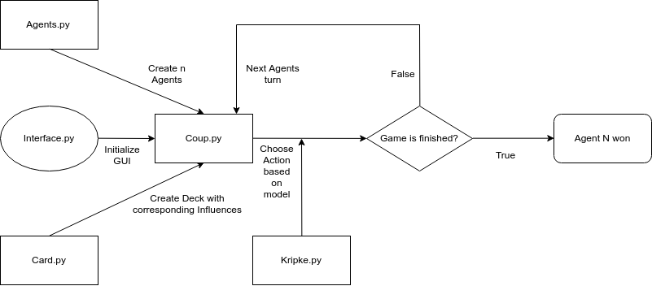

Game Implementation
Our game is implemented in Python. We use TkInter for the graphical user interface.
File Structure
The implementation consists of the following files (as well as some helper files which are not explained in detail):
Interface.py:
Main file for running the application using the GUI. Initializes a Coup instane with a given number of players.
Game.py:
Main file for running the application from the command line. Initializes a Coup instane with a given number of players.
Coup.py:
Contains the implementation of the game itself. The class contains functions for creating agents, the deck and dealing the cards to the agents. All agents are given two coins as well. Most importantly, the choose_action function is defined here which is the function where an agent chooses an action based on the corresponding Kripke model.
Action.py:
Contains the possible actions that an agent can choose.
Agent.py:
Contains all getters and setters for an agent instancs such as adding/removing cards and coins.
Card.py:
Contiains the relations between a card and the actual actions the card provides.
Kripke.py:
Contains all the code used for generating our Kripke models, as well as the query code which agents use to check their knowledge and beliefs.
General Flow of the Program
Below is a flowchart showing the general flow of a single session of the game.
